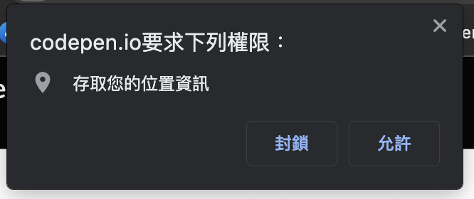

<!DOCTYPE html>
<html>
<head>
  <meta charset="utf-8">
  

  
  <title>那些被忽略但很好用的 Web API / Geolocation | Max&#39;s Blog</title>
  <meta name="viewport" content="width=device-width, initial-scale=1, maximum-scale=1">
  <meta name="description" content="我的字典裡沒有放棄，因為已鎖定你  現在有不少網站都有地圖相關的功能，而為了解決地圖繪製、路線運算、區域標示…等等複雜的功能，通常大家都會選用第三方的套件或服務，例如 Google Map API、Leaflet、MapBox 之類的，也因為有了這些好用的地圖套件，所以瀏覽器本身的 Geolocation API 可能就容易被遺忘。  Geolocation當然，Geolocation API">
<meta property="og:type" content="article">
<meta property="og:title" content="那些被忽略但很好用的 Web API &#x2F; Geolocation">
<meta property="og:url" content="https://maxleebk.com/2021/10/13/webApi/webApi-29/index.html">
<meta property="og:site_name" content="Max&#39;s Blog">
<meta property="og:description" content="我的字典裡沒有放棄，因為已鎖定你  現在有不少網站都有地圖相關的功能，而為了解決地圖繪製、路線運算、區域標示…等等複雜的功能，通常大家都會選用第三方的套件或服務，例如 Google Map API、Leaflet、MapBox 之類的，也因為有了這些好用的地圖套件，所以瀏覽器本身的 Geolocation API 可能就容易被遺忘。  Geolocation當然，Geolocation API">
<meta property="og:locale">
<meta property="og:image" content="https://maxleebk.com/2021/10/13/webApi/webApi-29/check.png">
<meta property="article:published_time" content="2021-10-13T11:19:00.000Z">
<meta property="article:modified_time" content="2023-10-23T03:44:28.059Z">
<meta property="article:author" content="Max Lee">
<meta property="article:tag" content="JavaScript">
<meta property="article:tag" content="WebApi">
<meta property="article:tag" content="13th鐵人賽">
<meta name="twitter:card" content="summary">
<meta name="twitter:image" content="https://maxleebk.com/2021/10/13/webApi/webApi-29/check.png">
  
    <link rel="alternate" href="/atom.xml" title="Max&#39;s Blog" type="application/atom+xml">
  
  
    <link rel="icon" href="/css/images/favicon.ico">
  
  <link href="https://fonts.googleapis.com/css2?family=Fira+Code&display=swap" rel="stylesheet">
  
<link rel="stylesheet" href="/css/style.css">

<meta name="generator" content="Hexo 6.3.0"></head>

<body>
  <div id="container">
    <div id="wrap">
      <header id="header">
  <div id="banner"></div>
  <div id="header-outer" class="outer">
    <div id="header-landing">
      <a href="/" id="header-avatar"></a>
      <div id="header-title">
        <h1 id="logo-wrap">
          <a href="/" id="logo">Max&#39;s Blog</a>
        </h1>
        
      </div>
    </div>
    <div id="header-inner" class="inner">
      <nav id="main-nav">
        <a id="main-nav-toggle" class="nav-icon"></a>
        
          <a class="main-nav-link" href="/">Home</a>
        
          <a class="main-nav-link" href="/archives">Article</a>
        
      </nav>
      <nav id="sub-nav">
        
          <a id="nav-rss-link" class="nav-icon" href="/atom.xml" title="RSS Feed"></a>
        
      </nav>
    </div>
  </div>
</header>
      <div class="outer">
        <section id="main"><article id="post-webApi/webApi-29" class="article article-type-post" itemscope itemprop="blogPost">
  <div class="article-meta">
    
  </div>
  <div class="article-inner">
    
    
      <header class="article-header">
        <div class="article-header-wrap">
          
  
    <h1 class="article-title" itemprop="name">
      那些被忽略但很好用的 Web API / Geolocation
    </h1>
  

          <div>
            <p class="article-date">
  Posted by Max on
  <time datetime="2021-10-13T11:19:00.000Z" itemprop="datePublished">2021-10-13</time>
</p>
          </div>
        </div>
      </header>
    
    
        <div class="article-excerpt" itemprop="articleBody">
          <div class="post-cate">
            
  <ul class="article-tag-list" itemprop="keywords"><li class="article-tag-list-item"><a class="article-tag-list-link" href="/tags/13th%E9%90%B5%E4%BA%BA%E8%B3%BD/" rel="tag">13th鐵人賽</a></li><li class="article-tag-list-item"><a class="article-tag-list-link" href="/tags/JavaScript/" rel="tag">JavaScript</a></li><li class="article-tag-list-item"><a class="article-tag-list-link" href="/tags/WebApi/" rel="tag">WebApi</a></li></ul>

            
          </div>
          
        </div>
      
        <div class="article-entry" itemprop="articleBody">
          <blockquote>
<p>我的字典裡沒有放棄，因為已鎖定你</p>
</blockquote>
<p>現在有不少網站都有地圖相關的功能，而為了解決地圖繪製、路線運算、區域標示…等等複雜的功能，通常大家都會選用第三方的套件或服務，例如 Google Map API、Leaflet、MapBox 之類的，也因為有了這些好用的地圖套件，所以瀏覽器本身的 Geolocation API 可能就容易被遺忘。</p>
<hr>
<h2 id="Geolocation"><a href="#Geolocation" class="headerlink" title="Geolocation"></a>Geolocation</h2><p>當然，Geolocation API 並沒有上述那些套件的強大功能，它能做的就是取得使用者目前的地理座標位置，不過，要是你的功能並沒有那麼複雜，單單只是想知道用戶位置的話，其他大可不用殺雞焉用牛刀，Geolocation API 就可以滿足你了。</p>
<p><br/><br/></p>
<h4 id="Navigator-geolocation"><a href="#Navigator-geolocation" class="headerlink" title="# Navigator.geolocation"></a># Navigator.geolocation</h4><p>Geolocation 的支援度是非常高的，電腦、手機，各家瀏覽器基本上都是可以使用的，不過在使用前你依然可以先進行檢查，若瀏覽器支援的話，只要透過 <code>navigator.geolocation</code> 就能取得 Geolocation 實體。</p>
<pre><code class="javascript">if (&quot;geolocation&quot; in navigator) &#123;
  console.log(navigator.geolocation);
&#125; else &#123;
  alert(&quot;你的裝置或瀏覽器不支援定位功能&quot;);
&#125;</code></pre>
<p><br/><br/></p>
<h4 id="Geolocation-getCurrentPosition"><a href="#Geolocation-getCurrentPosition" class="headerlink" title="# Geolocation.getCurrentPosition"></a># Geolocation.getCurrentPosition</h4><p>有了 Geolocation 實體後，就可以用 <code>getCurrentPosition</code> method 來取得座標位置了，該方法有三個參數，其中第一個為必傳，後兩個為選填：</p>
<ul>
<li><strong>success</strong>： 一個回呼函式，會在成功取得位置資訊時觸發，該函式會接到一個 Position 物件。</li>
<li><strong>error</strong>： 一個回呼函式，會在方法發生錯誤時觸發，該函式則會接到 PositionError 物件。</li>
<li><strong>options</strong>： 一個物件，其中的屬性可以用來設定獲取位置時的規則。</li>
</ul>
<br/>

<p>參數 options 的詳細屬性：</p>
<ul>
<li><strong>enableHighAccuracy</strong>： 一個布林值，決定是否要以最高精準度來取得座標位置，預設為 <code>false</code>。</li>
<li><strong>timeout</strong>： 一個代表毫秒數的正數，規定設備必須要在多少時間內回應位置資訊，預設為 <code>Infinity</code>。</li>
<li><strong>maximumAge</strong>： 一個代表毫秒數的正數，表示可以接受多少毫秒以前的暫存位置，預設為 <code>0</code>。</li>
</ul>
<br/>

<blockquote>
<p><strong>注意</strong>： 若將 <code>enableHighAccuracy</code> 打開，位置資訊的回傳時間將會變長，且可能會使裝置消耗更多電量。</p>
</blockquote>
<pre><code class="javascript">function successHandler(position) &#123;
  console.log(position);
&#125;

function errorHandler(err) &#123;
  console.log(err);
&#125;

navigator.geolocation.getCurrentPosition(successHandler, errorHandler, &#123;
  enableHighAccuracy: true,
  timeout: 5000,
  maximumAge: 0,
&#125;);</code></pre>
<p>由於定位資訊屬於隱私範圍，所以在呼叫 <code>getCurrentPosition</code> 時，它會先確認裝置的授權狀態，若使用者不接受則會發生錯誤，若使用者未表明授權與否，則會出現詢問對話框。</p>


<p><br/><br/></p>
<h4 id="Geolocation-watchPosition"><a href="#Geolocation-watchPosition" class="headerlink" title="# Geolocation.watchPosition"></a># Geolocation.watchPosition</h4><p>除了 <code>getCurrentPosition</code> 可以拿到執行當下的使用者定位之外，還有另外一個 method 是 <code>watchPosition</code>，它的功能與參數都與 <code>getCurrentPosition</code> 相同，差別是它會在使用者的位置發生改變時主動觸發 Success CallBack，等於是在監聽使用者的定位。</p>
<pre><code class="javascript">function successHandler(position) &#123;
  console.log(position);
&#125;

function errorHandler(err) &#123;
  console.log(err);
&#125;

// watchPosition 執行後會回傳一個獨一的 ID
const geoId = navigator.geolocation.watchPosition(successHandler, errorHandler);</code></pre>
<p><br/><br/></p>
<h4 id="Geolocation-clearWatch"><a href="#Geolocation-clearWatch" class="headerlink" title="# Geolocation.clearWatch"></a># Geolocation.clearWatch</h4><p>在上方 <code>watchPosition</code> 的範例中，我們用 <code>geoId</code> 來接它丟出來 ID 編號，我們可以將編號傳入 <code>clearWatch</code> method 中，便可以使對應的 <code>watchPosition</code> 停止監聽使用者定位。</p>
<pre><code class="javascript">const geoId = navigator.geolocation.watchPosition(successHandler, errorHandler);
navigator.geolocation.clearWatch(geoId);</code></pre>
<p><br/><br/></p>
<h4 id="Position-物件"><a href="#Position-物件" class="headerlink" title="# Position 物件"></a># Position 物件</h4><p>就如前面所說，Success CallBack 在成功獲取位置資訊時會被觸發，並且可以拿到 Position 物件，其中就包含了許多與地理位置相關的屬性可以使用：</p>
<ul>
<li><strong>position.coords.longitude</strong>： 使用者所在位置的經度。</li>
<li><strong>position.coords.latitude</strong>： 使用者所在位置的緯度。</li>
<li><strong>position.coords.accuracy</strong>： 回傳經緯度的水平誤差(平面距離)，單位為公尺。</li>
<li><strong>position.coords.altitude</strong>： 使用者所在位置的海拔高度，單位為公尺。</li>
<li><strong>position.coords.altitudeAccuracy</strong>： 回傳高度的垂直誤差(垂直高度)，單位為公尺。</li>
<li><strong>position.coords.heading</strong>： 使用者面向的方位，會以順時針相對於正北方的夾角角度呈現。</li>
<li><strong>position.coords.speed</strong>： 使用者面對的數度，單位為公尺/秒。</li>
</ul>
<br/>

<blockquote>
<p><strong>注意</strong>： 以上屬性均為浮點數，部分屬性會在裝置無法提供時回傳 <code>null</code>。</p>
</blockquote>
<p><br/><br/></p>
<h4 id="PositionError-物件"><a href="#PositionError-物件" class="headerlink" title="# PositionError 物件"></a># PositionError 物件</h4><p>另一方面，Error CallBack 則會在發生錯誤時觸發，並取得 PositionError 物件，該物件中的 <code>code</code> 屬性將會告知我們目前的錯誤是何種類型及原因：</p>
<table>
<thead>
<tr>
<th align="center">錯誤代號</th>
<th align="center">錯誤名稱</th>
<th align="center">解釋</th>
</tr>
</thead>
<tbody><tr>
<td align="center">1</td>
<td align="center">PERMISSION_DENIED</td>
<td align="center">沒有獲取裝置定位的權限</td>
</tr>
<tr>
<td align="center">2</td>
<td align="center">POSITION_UNAVAILABLE</td>
<td align="center">位置資訊獲取錯誤</td>
</tr>
<tr>
<td align="center">3</td>
<td align="center">TIMEOUT</td>
<td align="center">在 Timeout 前未取得定位資訊</td>
</tr>
</tbody></table>
<p><br/><br/></p>
<h4 id="簡單的小範例"><a href="#簡單的小範例" class="headerlink" title="# 簡單的小範例"></a># 簡單的小範例</h4><p>有了 Geolocation API 之後，我們就可以製作一些與位置有關的簡單小功能，像下方的範例就是取得使用者位置後，將經緯度丟給後端來計算距離最近的門市，然後將門市資訊提供給用戶。</p>
<pre><code class="html">&lt;button onclick=&quot;getPosition()&quot;&gt;搜尋最近的門市&lt;/button&gt;
&lt;div id=&quot;result&quot;&gt;&lt;/div&gt;

&lt;script&gt;
  const result = document.querySelector(&quot;#result&quot;);
  function successHandler(position) &#123;
    const &#123; longitude, latitude &#125; = position.coords;

    // 取得經緯度後傳給後端進行門市的搜尋
    axios.get(&quot;https://backend/store&quot;, &#123; longitude, latitude &#125;).then((res) =&gt; &#123;
      const store = res.data;
      result.innerHTML = &quot;離你最近的門市是&quot; + store.name + &quot;地址： &quot; store.address;
    &#125;);
  &#125;

  function errorHandler(err) &#123;
    alert(&quot;暫時無法取得您的所在位置，請稍後再試&quot;);
  &#125;

  function getPosition() &#123;
    navigator.geolocation.getCurrentPosition(successHandler, errorHandler);
  &#125;
&lt;/script&gt;</code></pre>
<p><br/><br/></p>
<p>每每說到裝置定位、座標時，大家第一個想到的可能都是 Google Map 或其他地圖套件，但其實瀏覽器本身就有 Geolocation API 可以幫我們處理簡單的定位功能。所以要是你的功能未必要顯示地圖的話，其實你可以選擇使用它喔。</p>
<hr>
<p>- 此篇文章為「iT 邦幫忙鐵人賽」參賽文章，同步發表於 <a target="_blank" rel="noopener" href="https://ithelp.ithome.com.tw/articles/10281557">iT 邦幫忙</a> -</p>

        </div>
      
    
  </div>

  <footer class="article-footer">
    <!-- 
      <a href="https://maxleebk.com/2021/10/13/webApi/webApi-29/#disqus_thread" class="article-comment-link">Comments</a>
     -->
    <div>
      
  <ul class="article-tag-list" itemprop="keywords"><li class="article-tag-list-item"><a class="article-tag-list-link" href="/tags/13th%E9%90%B5%E4%BA%BA%E8%B3%BD/" rel="tag">13th鐵人賽</a></li><li class="article-tag-list-item"><a class="article-tag-list-link" href="/tags/JavaScript/" rel="tag">JavaScript</a></li><li class="article-tag-list-item"><a class="article-tag-list-link" href="/tags/WebApi/" rel="tag">WebApi</a></li></ul>

    </div>
    <a data-url="https://maxleebk.com/2021/10/13/webApi/webApi-29/" data-id="clo2ctev40036jsnldbfm1dql" class="article-share-link">分享</a>
  </footer>
  
    
<nav id="article-nav">
  
    <div id="article-nav-older" class="article-nav-link-wrap">
      
      <strong class="article-nav-caption">前一篇文章</strong></br>
      <a href="/2021/10/12/webApi/webApi-28/" class="article-nav-title">那些被忽略但很好用的 Web API / Notification</a>
      
    </div>
  
  
    <div id="article-nav-newer" class="article-nav-link-wrap">
      
      <strong class="article-nav-caption">下一篇文章</strong></br>
      <a href="/2021/10/14/webApi/webApi-30/" class="article-nav-title">
        
          那些被忽略但很好用的 Web API / 結語
        
      </a>
      
    </div>
  
</nav>

  
</article>


<section id="comments">
  <div id="disqus_thread">
    <noscript>Please enable JavaScript to view the <a target="_blank" rel="noopener" href="//disqus.com/?ref_noscript">comments powered by Disqus.</a></noscript>
  </div>
</section>
</section>
        
      </div>
      <footer id="footer">
  
  <div class="outer">
    <div id="footer-info" class="inner">
      &copy; 2023 Max Lee ｜ Powered by <a href="http://hexo.io/" target="_blank">Hexo</a>
    </div>
  </div>
</footer>
    </div>
    <nav id="mobile-nav">
  
    <a href="/" class="mobile-nav-link">Home</a>
  
    <a href="/archives" class="mobile-nav-link">Article</a>
  
</nav>
    
<script>
  var disqus_shortname = 'f820602h';
  
  var disqus_url = 'https://maxleebk.com/2021/10/13/webApi/webApi-29/';
  
  (function(){
    var dsq = document.createElement('script');
    dsq.type = 'text/javascript';
    dsq.async = true;
    dsq.src = '//' + disqus_shortname + '.disqus.com/embed.js';
    (document.getElementsByTagName('head')[0] || document.getElementsByTagName('body')[0]).appendChild(dsq);
  })();
</script>

<!-- Highlight.js -->
<link rel="stylesheet" href="https://cdn.jsdelivr.net/gh/highlightjs/cdn-release@latest/build/styles/vs2015.min.css">
<script src="https://cdn.jsdelivr.net/gh/highlightjs/cdn-release@latest/build/highlight.min.js"></script>
<script>hljs.initHighlightingOnLoad();</script>

<script src="//ajax.googleapis.com/ajax/libs/jquery/2.0.3/jquery.min.js"></script>


  
<link rel="stylesheet" href="/fancybox/jquery.fancybox.css">

  
<script src="/fancybox/jquery.fancybox.pack.js"></script>


<script src="/js/script.js"></script>


  </div>
</body>
</html>